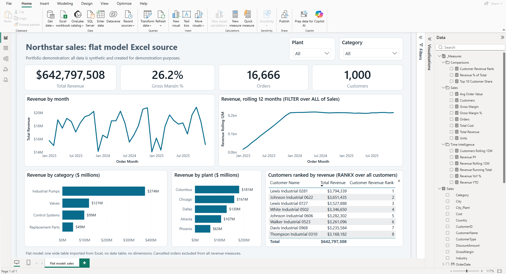

Project 1 · Performance and design
Northstar sales: flat model Excel source

A flat 50,000-row Excel spreadsheet of sample manufacturer sales data, loaded into Power BI as one wide table. This is how many analysts start. There are DAX measures for revenue, margin, customer ranking, rolling 12 month and year-over-year time intelligence which might have performance issues as the file size grows.
The open question it poses is how to improve performance.
Ways to improve it
- Rewrite DAX measures
- Add a date table
- Move processing to Power Query
- Remove unused columns
- Use correct data types for columns
- Create a star schema